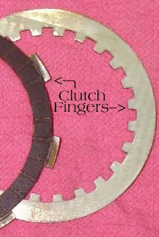
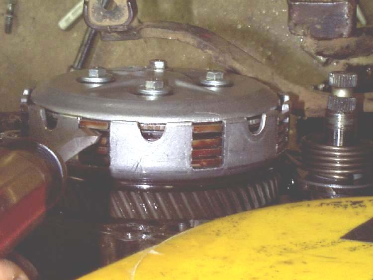
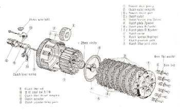

The clutch basket is the round steel or aluminium drum that holds the clutch plates. The big gear on its outside is driven by the engine. Inside it sits the clutch centre (inner hub), which is splined to the gearbox input shaft. Together they carry the clutch plates and pass the drive from engine to gearbox.
What it does
The basket has slots (grooves) around its inside edge. The tabs ("fingers") of one set of plates slide in these slots and turn with the engine. The other set of plates slides on the clutch centre and turns with the gearbox. When the clutch springs press the plates together, the two halves lock. When the lever is pulled, the plates separate and each half can turn on its own.
Signs it is worn or failing
- Notches worn into the slots catch the plate fingers, so the plates cannot separate or close cleanly. Typical result: clutch drag, judder or hard to find neutral.
- Rattle at idle that changes when the lever is pulled: clutch noise.
- Metal flakes in the oil on the drain plug magnet or in the old oil.
When to replace it
Look at the slots on both the basket and the centre whenever the plates are out. If the slots are only lightly marked, they can be dressed with a fine file. If the notches are deep enough to catch the plate fingers, consider a new basket or centre. The course also says that plates and basket should be judged together: new plates in a deeply notched basket will soon stick again.
What to match when buying
- Engine model and year. Baskets are not interchangeable between engines, even from one maker.
- Number of teeth on the primary gear and the number of plates it carries.
- Whether the engine has a built-in cush spring or rubber damper in the basket (some do, some do not).
Fitting notes
- Workshop job on most bikes. See Inspect and replace clutch plates and springs.
- Put the plates back in the same order. Make sure the outer plate that carries the springs meshes with the basket, or the springs cannot press the pack together.
- Some engines need a special tool to hold the centre and undo its nut. Use the tool and the torque in your bike's manual.
- Check any washers from the kickstart shaft that may stick inside the clutch cover.
- Refill the engine oil afterwards.